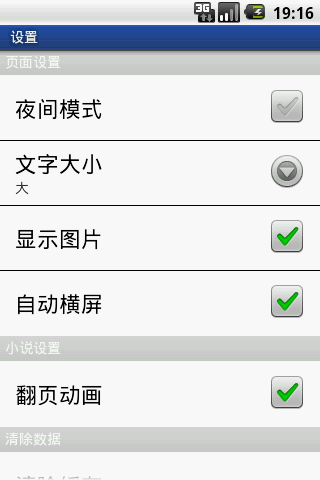
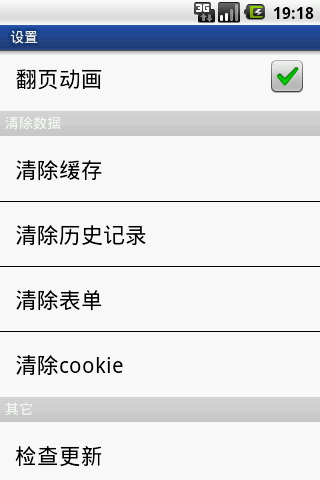
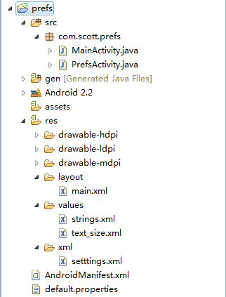
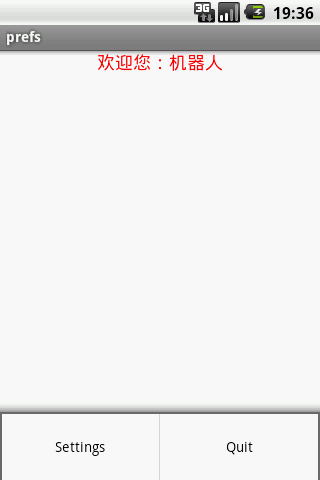
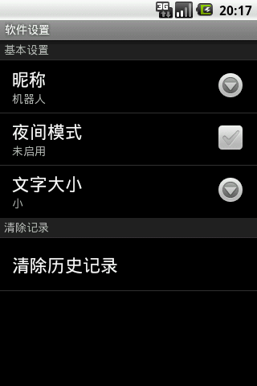
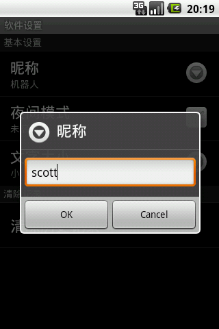
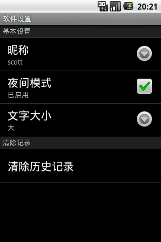

首选项这个名词对于熟悉Android的朋友们一定不会感到陌生，它经常用来设置软件的运行参数。
Android提供了一种健壮并且灵活的框架来处理首选项。它提供了简单的API来隐藏首选项的读取和持久化，并且提供了一个优雅的首选项界面。
首先，我们来看下面这款软件的首选项界面：

这款软件使用了好几种类型的首选项，每一种首选项都有其独特的用法，下面我们来了解一下几种常见的首选项：
CheckBoxPreference：用来打开或关闭某个功能
ListPreference：用来从多个选项中选择一个值；
EditTextPreference：用来配置一段文字信息；
Preference：用来执行相关的自定义操作(上图中的清除缓存、历史记录、表单、cookie都属于此项)；
RingtonePreference：专门用来为用户设置铃声。
当我们使用首选项框架时，用户每更改一项的值后，系统就会立即在/data/data/[PACKAGE_NAME]/shared_prefs下生成一个[PACKAGE_NAME]_preferences.xml的文件，文件会记录最新的配置信息。
那么如何使用首选想框架呢？我们需要以下几步操作：
1.建立一个首选项的xml配置文件，放在项目的/res/xml目录下面；
2.新建一个Activity，继承android.preference.PreferenceActivity，然后在onCreate方法中加载我们的首选项配置文件。
下面，我就为大家演示一下首选项框架的配置和使用：
我们新建一个prefs项目，项目结构如下：

我们要实现的功能跟上面那款软件的很相似，下面我来说明一下这个项目的整体流程：
1.主界面。显示用户昵称，有三个参数，昵称文字、字体大小和背景颜色。首次进入时，使用默认值。
2.按下menu键中的settings项，跳转到首选项页面，进行参数选择。
3.按下返回键，返回主界面，设定后的参数生效。
首先，让我们来看一下主界面的配置文件，非常简单，就一个TextView：
<?xml version="1.0" encoding="utf-8"?>
<LinearLayout xmlns:android="http://schemas.android.com/apk/res/android"
android:orientation="vertical"
android:layout_width="fill_parent"
android:layout_height="fill_parent">
<TextView
android:id="@+id/textView"
android:layout_width="fill_parent"
android:layout_height="fill_parent"
android:gravity="center_horizontal"
android:textColor="#FF0000"/>
</LinearLayout>
然后，我们需要在主界面里根据配置参数设置TextView的外观以及背景，MainActivity.java代码如下：
import android.app.Activity;
import android.content.Context;
import android.content.Intent;
import android.content.SharedPreferences;
import android.graphics.Color;
import android.os.Bundle;
import android.view.Menu;
import android.view.MenuItem;
import android.widget.TextView;
public class MainActivity extends Activity {
private static final int SETTINGS_ID = 0;
private static final int EXIT_ID = 1;
private TextView textView;
@Override
public void onCreate(Bundle savedInstanceState) {
super.onCreate(savedInstanceState);
setContentView(R.layout.main);
textView = (TextView) findViewById(R.id.textView);
showSettings();
}
@Override
public boolean onCreateOptionsMenu(Menu menu) {
super.onCreateOptionsMenu(menu);
menu.add(0, SETTINGS_ID, 0, "Settings");
menu.add(0, EXIT_ID, 0, "Quit");
return true;
}
@Override
public boolean onOptionsItemSelected(MenuItem item) {
if (item.getItemId() == SETTINGS_ID) {
Intent intent = new Intent(MainActivity.this, PrefsActivity.class);
//如果requestCode >= 0 则返回结果时会回调 onActivityResult()方法
startActivityForResult(intent, 1);
} else {
finish();
}
return true;
}
@Override
protected void onActivityResult(int requestCode, int resultCode, Intent data) {
super.onActivityResult(requestCode, resultCode, data);
showSettings();
}
private void showSettings() {
String prefsName = getPackageName() + "_preferences"; //[PACKAGE_NAME]_preferences
SharedPreferences prefs = getSharedPreferences(prefsName, Context.MODE_PRIVATE);
String nickName = prefs.getString("nickName", "机器人");
textView.setText("欢迎您：" + nickName);
boolean nightMode = prefs.getBoolean("nightMode", false);
textView.setBackgroundColor(nightMode ? Color.BLACK : Color.WHITE);
String textSize = prefs.getString("textSize", "0");
if (textSize.equals("0")) {
textView.setTextSize(18f);
} else if (textSize.equals("1")) {
textView.setTextSize(22f);
} else if (textSize.equals("2")) {
textView.setTextSize(36f);
}
}
}
可以看到，进入主界面之后会根据[PACKAGE_NAME]_preferences获取首选项配置信息，如果是首次进入，则使用默认值，下面就是我们首次进入主界面时的画面：

可以看到，我们初次进入的界面时昵称为“机器人”，字的背景为白色，字的大小为18号。
然后按下Settings之后，我们就可以进行首选项的配置了，让我们先来看一下settings.xml的配置：
<?xml version="1.0" encoding="utf-8"?> <PreferenceScreen xmlns:android="http://schemas.android.com/apk/res/android" android:key="settings" android:title="软件设置"> <PreferenceCategory android:key="basic" android:title="基本设置"> <EditTextPreference android:key="nickName" android:title="昵称" android:defaultValue="机器人"/> <CheckBoxPreference android:key="nightMode" android:title="夜间模式" android:summaryOn="已启用" android:summaryOff="未启用"/> <ListPreference android:key="textSize" android:title="文字大小" android:dialogTitle="文字大小" android:entries="@array/textSize_entry" android:entryValues="@array/textSize_entry_value" android:defaultValue="0"/> </PreferenceCategory> <PreferenceCategory android:key="clean" android:title="清除记录"> <Preference android:key="cleanHistory" android:title="清除历史记录" /> </PreferenceCategory> </PreferenceScreen>
其中，最外层是PreferenceScreen标签，代表一系列首选项的集合；然后，我们注意到PreferenceCategory这一项，此标签代表一个类别，可以包含多个首选项；最后就是我们用于配置参数的首选项了。需要了解的是，PreferenceScreen也可以嵌套使用，也就是说上面的PreferenceCategory可以替换成PreferenceScreen。
此外，我们还需要了解一下文件中出现的几个常用标签属性：
android:key 选项的名称或键
android:title 选项的标题
android:summary 选项的简短摘要
android:entries 列表项的文本
android:entryValues 列表中每一项的值
android:dialogTitle 对话框标题
android:defalutValue 列表中选项的默认值
对于CheckBoxPreference还有两个特殊的属性
android:summaryOn 选项被选中时显示的摘要
android:summaryOff 选项未选中时显示的摘要
我们还可以看到，在ListPreference中，entries来自于textSize_entry，而entryValues来自于textSize_entry_value，这两项都在/res/values目录下的text_size.xml配置：
<?xml version="1.0" encoding="utf-8"?> <resources> <string-array name="textSize_entry"> <item>小</item> <item>中</item> <item>大</item> </string-array> <string-array name="textSize_entry_value"> <item>0</item> <item>1</item> <item>2</item> </string-array> </resources>
配置完成之后，我们就剩下最后一步了，创建Activity，继承PreferenceActivity，加载首选项资源文件，处理相应的选项事件。
PrefsActivity.java代码如下：
import android.app.AlertDialog;
import android.content.DialogInterface;
import android.os.Bundle;
import android.preference.EditTextPreference;
import android.preference.ListPreference;
import android.preference.Preference;
import android.preference.PreferenceActivity;
import android.preference.PreferenceScreen;
import android.widget.Toast;
public class PrefsActivity extends PreferenceActivity implements Preference.OnPreferenceChangeListener {
private EditTextPreference nickName;
private ListPreference textSize;
private Preference cleanHistory;
@Override
public void onCreate(Bundle savedInstanceState) {
super.onCreate(savedInstanceState);
addPreferencesFromResource(R.xml.setttings);
nickName = (EditTextPreference) findPreference("nickName");
textSize = (ListPreference) findPreference("textSize");
cleanHistory = findPreference("cleanHistory");
//为nickName和textSize注册Preference.OnPreferenceChangeListener监听事件
//当值更改时我们可以立即更新summary
nickName.setOnPreferenceChangeListener(this);
textSize.setOnPreferenceChangeListener(this);
initSummary();
}
//初始化summary
private void initSummary() {
nickName.setSummary(nickName.getText());
setTextSizeSummary(textSize.getValue());
}
private void setTextSizeSummary(String textSizeValue) {
if (textSizeValue.equals("0")) {
textSize.setSummary("小");
} else if (textSizeValue.equals("1")) {
textSize.setSummary("中");
} else if (textSizeValue.equals("2")) {
textSize.setSummary("大");
}
}
/**
* 重写PreferenceActivity的onPreferenceTreeClick方法
* 在首选项被点击时 做出相应处理操作
*/
@Override
public boolean onPreferenceTreeClick(PreferenceScreen preferenceScreen, Preference preference) {
if (preference == cleanHistory) {
new AlertDialog.Builder(this)
.setTitle("清除历史记录")
.setMessage("是否真的要清除历史记录？")
.setPositiveButton("是", new DialogInterface.OnClickListener() {
@Override
public void onClick(DialogInterface dialog, int which) {
//cleaning history...
Toast.makeText(PrefsActivity.this, "清除成功", Toast.LENGTH_SHORT).show();
}
}).setNegativeButton("否", new DialogInterface.OnClickListener() {
@Override
public void onClick(DialogInterface dialog, int which) {
dialog.dismiss();
}
}).create().show();
}
return true;
}
/**
* 重写Preference.OnPreferenceChangeListener的onPreferenceChange方法
* 当首选项的值更改时 做出相应处理操作
*/
@Override
public boolean onPreferenceChange(Preference preference, Object newValue) {
if (preference == nickName) {
nickName.setSummary(newValue.toString());
} else if (preference == textSize) {
setTextSizeSummary(newValue.toString());
}
return true;
}
}
最后，别忘了在AndroidManifest.xml中加入此Activity配置信息：
<activity android:name=".PrefsActivity"/>
当然我们也可以配置一下<intent-filter></intent-filter>属性。
经过以上几步，我们的首选项配置就完成了，首次进入的界面如下：

然后我们分别更改昵称、夜间模式、文字大小，如下：

可以看到，当我们更改了选项的值之后，摘要部分已经设置为最新值了，此时在我们应用下的shared_prefs目录中生成一个com.scott.prefs_preferences.xml文件。
内容如下：
<?xml version='1.0' encoding='utf-8' standalone='yes' ?> <map> <boolean name="nightMode" value="true" /> <string name="nickName">scott</string> <string name="textSize">2</string> </map>
此时，我们按回退键，回到主界面，发现刚才的设置已经生效了。